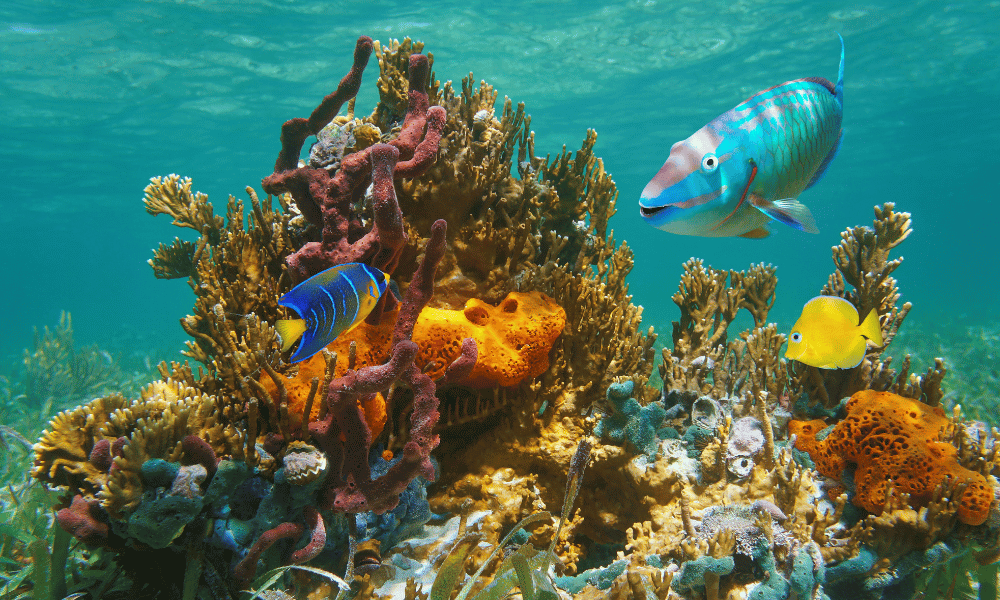
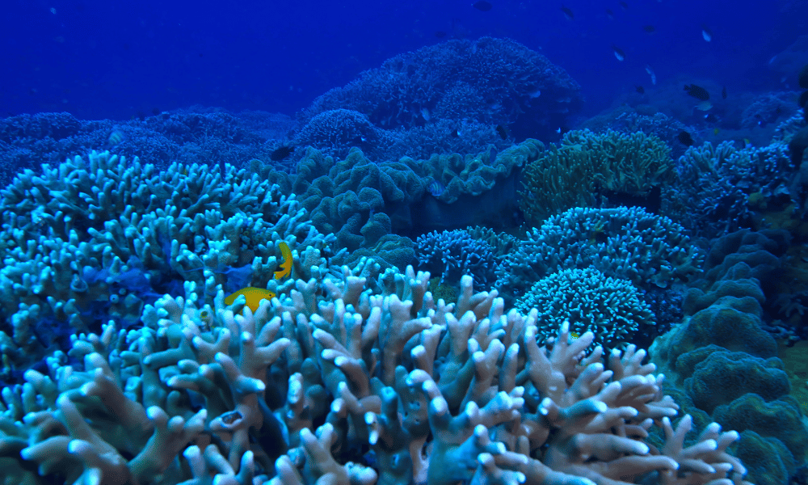

Impacts on Marine Life
Table of Content

Introduction:
The vast, mysterious depths of our oceans harbor a wealth of life, from the smallest plankton to the mightiest whales. However, beneath the shimmering surface lies a world under siege. Human activities have unleashed a barrage of threats upon marine ecosystems, imperiling not only the creatures that call these waters home but also the communities that depend on them for sustenance and livelihoods. In this exploration, we delve into the multifaceted impacts of these threats on marine life, with a particular focus on endangered species, coral reefs, and coastal communities.
Endangered Species:
The plight of endangered marine species serves as a poignant reminder of the far-reaching consequences of human actions. Pollution, overfishing, habitat destruction, and climate change have pushed numerous species to the brink of extinction. Iconic creatures such as sea turtles, vaquita porpoises, and bluefin tuna are among those struggling to survive in an increasingly hostile environment. Their decline not only disrupts the delicate balance of marine ecosystems but also diminishes the richness and diversity of our planet's biodiversity.
Coral Reefs:
Coral reefs, often referred to as the "rainforests of the sea," are vibrant underwater ecosystems teeming with life. However, they are facing an existential threat unlike any before. Rising sea temperatures, ocean acidification, pollution, and destructive fishing practices have triggered widespread coral bleaching and die-offs. These magnificent structures, home to a quarter of all marine species, are rapidly deteriorating, leaving behind barren wastelands devoid of life. The loss of coral reefs not only devastates marine biodiversity but also jeopardizes the millions of people who rely on them for food, income, and coastal protection.
Coastal Communities:
For countless coastal communities around the world, the ocean is not just a source of wonderment but a lifeline. Fishing, tourism, and other marine-related activities sustain their economies and way of life. However, these communities are increasingly vulnerable to the impacts of human-induced threats. Overfishing depletes fish stocks, depriving local fishermen of their livelihoods and food security. Pollution contaminates coastal waters, endangering human health and tarnishing pristine beaches. Climate change exacerbates these challenges, with rising sea levels and extreme weather events posing existential threats to coastal settlements.
Conclusion:
The ongoing assault on marine life is a wake-up call for humanity to rethink our relationship with the oceans. As stewards of this precious resource, we must take urgent action to mitigate the threats facing marine ecosystems. Sustainable fishing practices, marine protected areas, and efforts to combat climate change are crucial steps in safeguarding the future of our oceans. By working together to address these challenges, we can ensure that marine life thrives for generations to come, preserving not only the wonders of the sea but also the livelihoods of coastal communities worldwide.